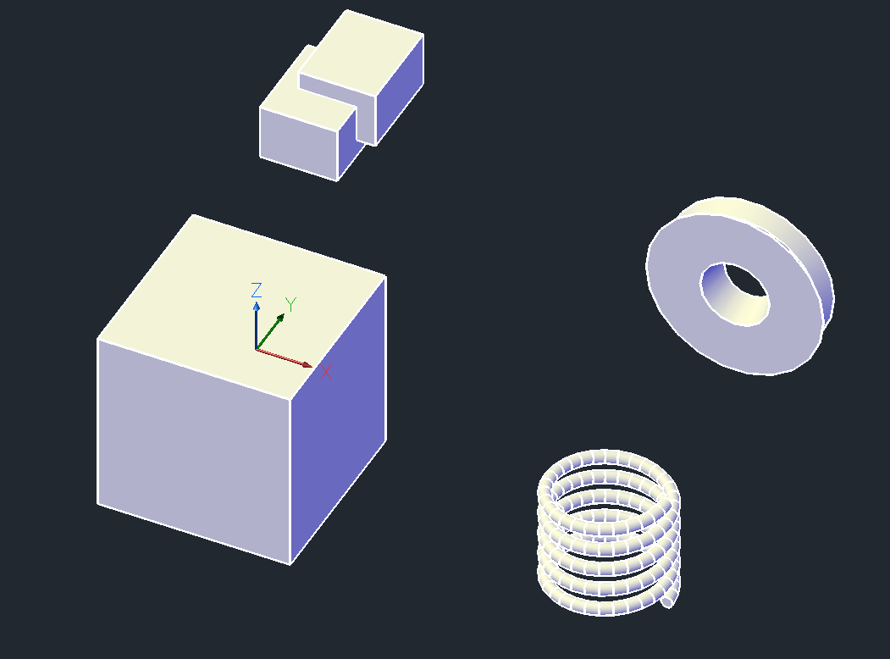
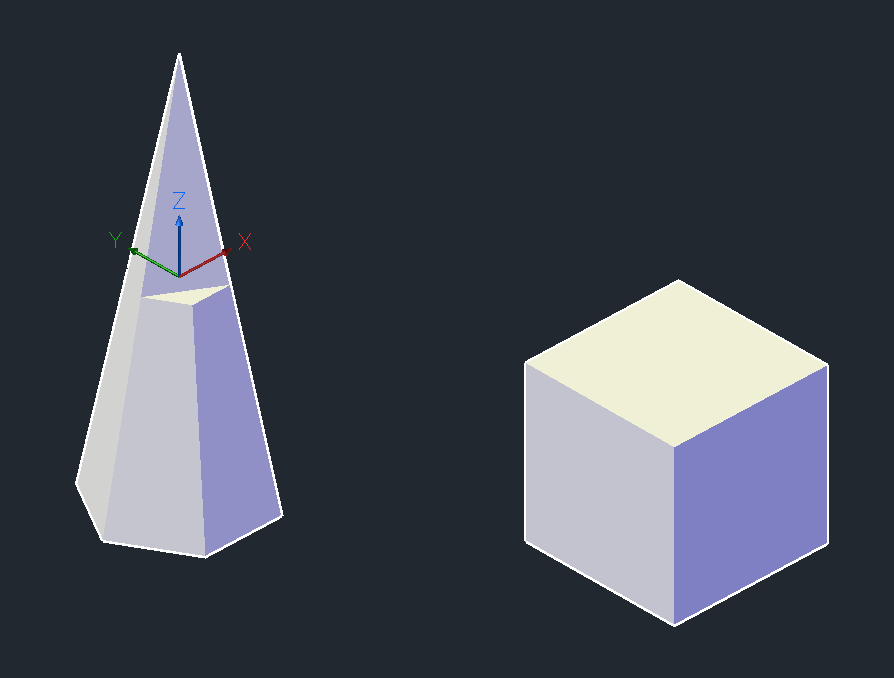
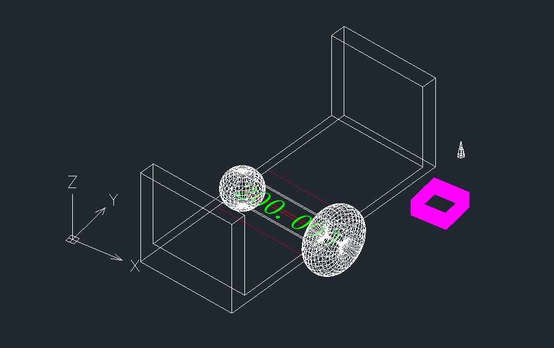
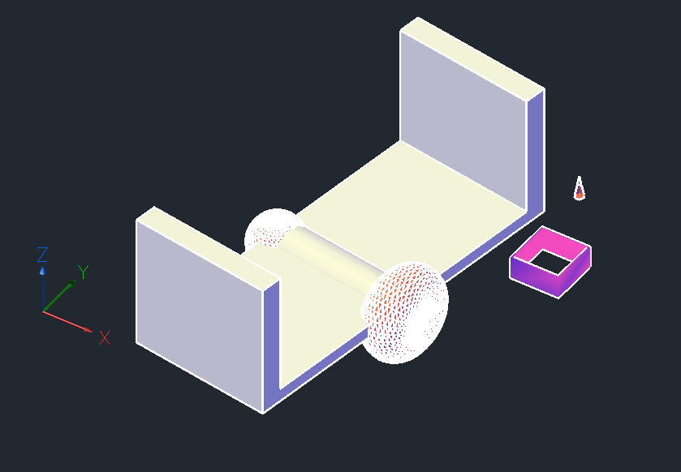
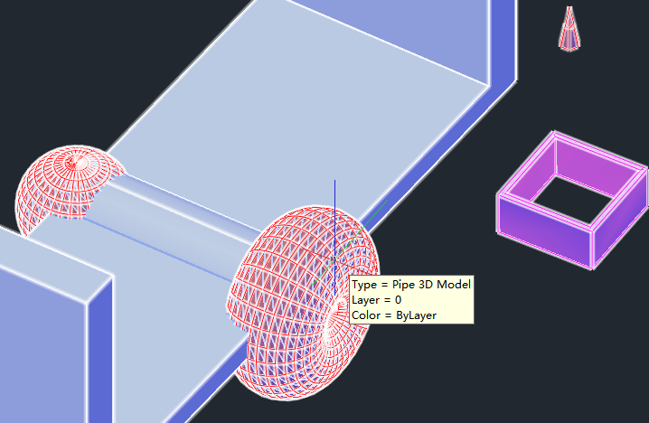
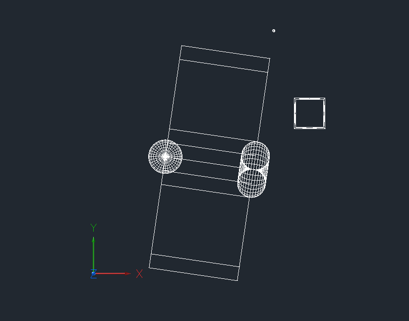

中望CAD不仅以卓越的二维设计著称，其强大的三维建模能力同样值得关注。它为设计师提供了从二维到三维的无缝衔接，支持在三维空间中快速构建、编辑和分析复杂模型，显著提升工程设计与制造的效率。 通过组合立方体、球体、圆柱体等基础几何体，结合布尔运算、参数化调整及自由变形工具，用户能高效创建多样化的三维对象。中望CAD精准的比例控制、动态尺寸标注及标高/厚度参数化设置，确保模型结构严谨且符合实际需求，同时支持逼真的立体效果呈现。 无论是机械零件、建筑结构还是工业产品，中望CAD的三维功能都能将创意转化为高精度的可实施方案，助力设计流程全面升级。
三维是个非常广泛的概念，不仅仅包括中望CAD中提到的三维实体，三维曲面，也包含了利用自定义实体制作三维自定义实体，本章节都会逐一介绍。
三维基础建模
本小节介绍三类常用的创建三维实体的方法:创建标准形状的实体、拉伸面域创建实 体和旋转面域创建实体。本节通过创建长方体、旋转体和扫掠实体来介绍这三种方法。 仅能用三类方法来创建实体，所能得到的实体的形状还是很有限的，布尔运算提供了实 体的交、并、补运算，能够根据已有的实体"组合"出复杂形状的实体。本节通过对两个长 方体进行布尔运算来介绍其使用方法。
标准创建
void createBox()
{
ZcDb3dSolid* solid = new ZcDb3dSolid();
solid->createBox(100, 100, 100);
PostToModelSpace(solid);
}
拉伸创建
void extrudeAlongPath()
{
// 指定创建螺旋线的参数
double radius, deltaVertical; // 半径和每一周在垂直方向的增量
double number, segment; // 螺旋线的旋转圈数和组成一圈的分段数
radius = 30, deltaVertical = 12;
number = 5, segment = 30;
// 计算点的个数和角度间隔
int n = number * segment; // 点的个数实际上是n+1
double angle = 8 * atan(1) / segment; // 两点之间的旋转角度
// 计算控制点的坐标
ZcGePoint3dArray points; // 控制点坐标数组
for (int i = 0; i < n + 1; i++)
{
ZcGePoint3d vertex;
vertex[X] = radius * cos(8 * i * atan(1) / segment);
vertex[Y] = radius * sin(8 * i * atan(1) / segment);
vertex[Z] = i * deltaVertical / segment;
points.append(vertex);
}
// 创建螺旋线路径
ZcDb3dPolyline *p3dPoly = new ZcDb3dPolyline(ZcDb::k3dSimplePoly, points);
// 将路径添加到模型空间
ZcDbObjectId spireId = PostToModelSpace(p3dPoly);
// 创建一个圆作为拉伸的截面
ZcGeVector3d vec(0, 1, 0); // 圆所在平面的法矢量
ZcGePoint3d ptCenter(30, 0, 0); // 圆心位置与半径的大小有关
ZcDbCircle *pCircle = new ZcDbCircle(ptCenter, vec, 3);
ZcDbObjectId circleId = PostToModelSpace(pCircle);
// 根据圆创建一个面域
ZcDbObjectIdArray boundaryIds, regionIds;
boundaryIds.append(circleId);
regionIds = RegionAdd(boundaryIds);
// 打开拉伸截面和拉伸路径
ZcDbRegion *pRegion = NULL;
if (zcdbOpenObject(pRegion, regionIds.at(0), ZcDb::kForRead) == Zcad::eOk)
{
ZcDb3dPolyline *pPoly = NULL;
if (zcdbOpenObject(pPoly, spireId, ZcDb::kForRead) == Zcad::eOk)
{
// 进行拉伸操作
ZcDb3dSolid *pSolid = new ZcDb3dSolid();
pSolid->extrudeAlongPath(pRegion, pPoly);
PostToModelSpace(pSolid);
pPoly->close();
}
pRegion->close();
}
}
旋转创建
void RevolveEnt()
{
// 设置顶点的坐标
ZcGePoint3d vertex[5];
vertex[0] = ZcGePoint3d(18, 0, 0);
vertex[1] = ZcGePoint3d(46, 0, 0);
vertex[2] = ZcGePoint3d(38, 9, 0);
vertex[3] = ZcGePoint3d(43, 17, 0);
vertex[4] = ZcGePoint3d(14, 17, 0);
ZcGePoint3dArray points;
for (int i = 0; i <= 4; i++)
{
points.append(vertex[i]);
}
// 创建作为旋转截面的多段线
ZcDb3dPolyline *p3dPoly = new ZcDb3dPolyline(ZcDb::k3dSimplePoly,
points, true);
ZcDbObjectId polyId =PostToModelSpace(p3dPoly);
// 将闭合的多段线转化成面域
ZcDbObjectIdArray boundaryIds, regionIds;
boundaryIds.append(polyId);
regionIds = RegionAdd(boundaryIds);
// 进行旋转操作
ZcDbRegion *pRegion = NULL;
if (zcdbOpenObject(pRegion, regionIds.at(0), ZcDb::kForRead) == Zcad::eOk)
{
ZcDb3dSolid *pSolid = new ZcDb3dSolid();
pSolid->revolve(pRegion, ZcGePoint3d::kOrigin, ZcGeVector3d(0, 1, 0), 8 * atan(1));
PostToModelSpace(pSolid);
pRegion->close();
}
}
布尔运算
void booleanOper()
{
// 创建两个长方体
ZcDb3dSolid *pSolid1 = new ZcDb3dSolid();
pSolid1->createBox(40, 50, 30);
ZcDb3dSolid *pSolid2 = new ZcDb3dSolid();
pSolid2->createBox(40, 50, 30);
// 使用几何变换矩阵移动长方体
ZcGeMatrix3d xform;
ZcGeVector3d vec(10, 20, 10);
xform.setToTranslation(vec);
pSolid1->transformBy(xform);
// 将长方体添加到模型空间
ZcDbObjectId solidId1 = PostToModelSpace(pSolid1);
ZcDbObjectId solidId2 = PostToModelSpace(pSolid2);
// 进行布尔运算，生成新的实体
zcdbOpenObject(pSolid1, solidId1, ZcDb::kForWrite);
zcdbOpenObject(pSolid2, solidId2, ZcDb::kForWrite);
Zcad::ErrorStatus es = pSolid1->booleanOper(ZcDb::kBoolUnite, pSolid2);
assert(pSolid2->isNull());
pSolid2->erase(); // 手工将其删除
pSolid2->close(); // 删除之后还是需要关闭该实体
pSolid1->close();
}
将以上方法注册成命令依次执行结果如图：

网格建模（Mesh）
Mesh标准创建：
void CreateMesh()
{
ZcDbSubentId tarSubentId;
ZcDbSubDMesh* pyramid = new ZcDbSubDMesh();
double radius = 10.0;
double height = 50.0;
int divLength = 1;
int divHeight = 2;
int divCap = 1;
int nSides = 6;
double radiusRatio = 0.0;
int subDLevel = 0;
Zcad::ErrorStatus es = pyramid->setPyramid(radius, height, divLength, divHeight, divCap, nSides, radiusRatio, subDLevel);
bool bFound = false;
ZcGePoint3d tarPoint;
ZcDbFullSubentPathArray edgePaths;
es = pyramid->getSubentPath(-1, ZcDb::kEdgeSubentType, edgePaths);
for (int i = 0; !bFound && i < edgePaths.length(); i++)
{
ZcDbFullSubentPath subEntPath = edgePaths[i];
ZcDbSubentId subentId = subEntPath.subentId();
ZcDbEntity* pEnt = pyramid->subentPtr(subEntPath);
ZcDbCurve* poly = ZcDbCurve::cast(pEnt);
if (poly)
{
ZcGePoint3d pt1, pt2;
es = poly->getStartPoint(pt1);
es = poly->getEndPoint(pt2);
if (!bFound && (pt1.z == 25.0 || pt2.z == 25.0))
{
tarSubentId = subentId;
tarPoint = pt1.z == 25.0 ? pt2 : pt1;
bFound = true;
}
}
delete pEnt;
pEnt = NULL;
}
es = pyramid->spin(tarSubentId);
if (Zcad::eOk == es && bFound)
{
bFound = false;
edgePaths.removeAll();
ZcGePoint3d ptMid = ZcGePoint3d(0, 0, tarPoint.z);
ZcGePoint3d tarPointAnother = ptMid + (ptMid - tarPoint);
es = pyramid->getSubentPath(-1, ZcDb::kEdgeSubentType, edgePaths);
for (int i = 0; !bFound && i < edgePaths.length(); i++)
{
ZcDbFullSubentPath subEntPath = edgePaths[i];
ZcDbSubentId subentId = subEntPath.subentId();
ZcDbEntity* pEnt = pyramid->subentPtr(subEntPath);
ZcDbCurve* poly = ZcDbCurve::cast(pEnt);
if (poly)
{
ZcGePoint3d pt1, pt2;
es = poly->getStartPoint(pt1);
es = poly->getEndPoint(pt2);
if (!bFound && ((pt1.z == 25.0 && pt2.isEqualTo(tarPointAnother)) || (pt2.z == 25.0 && pt1.isEqualTo(tarPointAnother))))
{
tarSubentId = subentId;
bFound = true;
}
}
delete pEnt;
pEnt = NULL;
}
es = pyramid->spin(tarSubentId);
}
if (Zcad::eOk != es)
{
delete pyramid;
pyramid = NULL;
}
else
{
PostToModelSpace((ZcDbEntity*)pyramid);
}
}
通过zcdbGetObjectMesh建模：
void SubDMesh_zcdbGetObjectMesh()
{
Zcad::ErrorStatus es(Zcad::eOk);
ZcDb3dSolid* pSolid = new ZcDb3dSolid();
es = pSolid->createBox(20, 20, 20);
ZcDbFaceterSettings faceterSettings{};
faceterSettings.faceterMeshType = 2; // 网格由三角面构成
ZcGePoint3dArray vertexArray;
ZcArray faceArray;
ZcGiFaceData* faceData = NULL;
zcutPrintf(_T("faceterSettings: \n faceterDevSurface: %g\n")
_T(" faceterDevNormal: %g\n")
_T(" faceterDevSurface: %g\n")
_T(" faceterGridRatio: %g\n")
_T(" faceterMaxEdgeLength: %g\n")
_T(" faceterMaxGrid: %d\n")
_T(" faceterMinUGrid: %d\n")
_T(" faceterMinVGrid: %d\n")
_T(" faceterMeshType: %d\n"),
faceterSettings.faceterDevSurface,
faceterSettings.faceterDevNormal,
faceterSettings.faceterGridRatio,
faceterSettings.faceterMaxEdgeLength,
faceterSettings.faceterMaxGrid,
faceterSettings.faceterMinUGrid,
faceterSettings.faceterMinVGrid,
faceterSettings.faceterMeshType
);
es = zcdbGetObjectMesh(pSolid, &faceterSettings, vertexArray, faceArray, faceData);
if (faceData)
{
delete[] faceData->trueColors();
delete[] faceData->materials();
delete[] faceData;
}
delete pSolid;
pSolid = NULL;
ZcDbSubDMesh* pMesh = new ZcDbSubDMesh();
es = pMesh->setSubDMesh(vertexArray, faceArray, 0);
if (Zcad::eOk != es || Zcad::eOk != AppendToModalSpaceAndClose((ZcDbEntity*)pMesh,zcdbHostApplicationServices()->workingDatabase()))
{
delete pMesh;
pMesh = NULL;
}
}
通过执行上面两段函数运行结果如图：

高级建模
前面部分介绍了一些基础的建模案例，往往实际应用中建模非常复杂，简单的建模接口满足不了复杂模型的建模，这个部分将介绍如何通过自定义实体来创建更复杂的三维模型。
自定义实体章节内容我们就不重点介绍细节，不清楚怎么创建和应用自定义实体的可以参考自定义对象章节，本实例选取了ZRXSDK\samples\Database\MyPipe自定义实体示例，在该示例下进行改造。
首先在自定义实体头文件添加需要绘制的三维实成员变量，有上面介绍过的ZcDb3dSolid和ZcDbSubDMesh，另外还引用了一种Body对象，是调用了ZRXSDK\utils\amodeler库。
ZcDb3dSolid *m_pSolid; // 3dSolid 实体 ZcDb3dSolid *m_pSolid2; ZcDbSubDMesh* box; //Mesh实体 Body m_3dGeom; // amodeler对象 Body m_3dGeom2;
其次就是最关键的步骤，往自定义实体ZSoft::Boolean Pipe::subWorldDraw(ZcGiWorldDraw *mode)里面添加实体绘制：
所有绘制的数据基础都是通过MyPipe示例中原有的 ZcGePoint3d m_startPnt;ZcGePoint3d m_endPnt;ZcDbPolyline* m_pBaseCurve;为数据基础绘制三维模型。
ZcDb3dSolid创建和worldDraw：
m_pSolid = makePipeBySolid(m_pBaseCurve, m_diameter/2);
if (!m_pSolid)
zcutPrintf(_T("\nmakePipeBySolid failed."));
m_pSolid2 = makePipeBySolid2(m_pBaseCurve, m_diameter);
if (!m_pSolid2)
zcutPrintf(_T("\nmakePipeBySolid failed."));
bool bRel = m_pSolid->worldDraw(mode);
bool bRe2 = m_pSolid2->worldDraw(mode);
ZcDbSubDMesh创建和worldDraw：
box = ZcDbSubDMesh_spin(); box->transformBy(vec1+ vec*500); bool bRel = box->worldDraw(mode);
amodeler对象创建：
m_3dGeom = createSphere(m_startPnt, 60, 32);
m_3dGeom2 = createTorus(m_endPnt, m_startPnt, 50, 50, 32, 32);
・・・・・・
・・・・・・
・・・・・・
Body Pipe::createSphere(const ZcGePoint3d& p, double radius, int approx)
{
Body dGeom = Body::sphere(*(Point3d*)&p, radius, approx);
if (!dGeom.isValid())
throw eFail;
else
{
return dGeom;
}
}
Body Pipe::createCylinder(const ZcGePoint3d& axisStart, const ZcGePoint3d& axisEnd,
const ZcGeVector3d& baseNormal, double radius, int approx)
{
Body dGeom = Body::cylinder(
Line3d(*(Point3d*)&axisStart, *(Point3d*)&axisEnd),
*(Vector3d*)&baseNormal,
radius,
approx);
if (!dGeom.isValid())
throw eFail;
else
{
return dGeom;
}
}
amodeler对象的绘制会稍微复杂一些，核心是切片后用geometry().shell绘制。
switch (mode->regenType()) {
case kZcGiHideOrShadeCommand:
case kZcGiShadedDisplay:
//
// Draw shells
//
{
ZsdkBodyAModelerCallBack AModelerCallBack(mode);
m_3dGeom.triangulate(&AModelerCallBack);
m_3dGeom2.triangulate(&AModelerCallBack);
int count = m_3dGeom.faceCount();
int count2 = m_3dGeom2.faceCount();
m_3dGeom.triangulateAllFaces();
count = m_3dGeom.faceCount();
m_3dGeom2.triangulateAllFaces();
count2 = m_3dGeom2.faceCount();
}
break;
case kZcGiStandardDisplay:
case kZcGiSaveWorldDrawForR12:
//
// Draw wireframe with visible hidden lines
//
drawAllEdges(m_3dGeom, mode);
drawAllEdges(m_3dGeom2, mode);
break;
default:
//
// Unknown regenType
//
//ASSERT(0);
break;
} /*switch*/
另外单独介绍一种shell/mesh的绘制，该绘制方法更加精细，可以通过各种点线面数据绘制出复杂实体，如地理模型，复杂零件等都适用于该方法来绘制：
ZcGePoint3d pVerts[16];
ZSoft::Int32 * pFaceList = NULL;
int iVertsSize = 16, iFaceSize = 60;
pVerts[0] = ZcGePoint3d(150, 250, 50) + vec1;
pVerts[1] = ZcGePoint3d(150, 250, 100) + vec1;
pVerts[2] = ZcGePoint3d(250, 250, 100) + vec1;
pVerts[3] = ZcGePoint3d(250, 250, 50) + vec1;
pVerts[4] = ZcGePoint3d(250, 150, 100) + vec1;
pVerts[5] = ZcGePoint3d(250, 150, 50) + vec1;
pVerts[6] = ZcGePoint3d(150, 150,100) + vec1;
pVerts[7] = ZcGePoint3d(150, 150, 50) + vec1;
pVerts[8] = ZcGePoint3d(145, 145, 50) + vec1;
pVerts[9] = ZcGePoint3d(255, 145, 50) + vec1;
pVerts[10] = ZcGePoint3d(255, 255, 50) + vec1;
pVerts[11] = ZcGePoint3d(145, 255,50) + vec1;
pVerts[12] = ZcGePoint3d(145, 255, 100) + vec1;
pVerts[13] = ZcGePoint3d(255, 255, 100) + vec1;
pVerts[14] = ZcGePoint3d(255, 145, 100) + vec1;
pVerts[15] = ZcGePoint3d(145, 145, 100) + vec1;
ZSoft::Int32 listarr[60] = { 4,0,1,2,3,4,3,2,4,5,4,5,4,6,7,4,7,6,1,0,4,8,9,10,11,-4,3,5,7,0,4,12,13,14,15,-4,1,6,4,2,4,10,13,12,11,4,9,14,13,10,4,8,15,14,9,4,11,12,15,8 };
pFaceList = listarr;
ZSoft::Boolean bok = mode->geometry().shell(iVertsSize, pVerts, iFaceSize, pFaceList);
经过如上改造最终生成出自定义实体如图：

中望CAD中默认显示视图是二维线框显示，显示出来的三维模型可能不够美观，可以使用ZcDbViewportTable来设置切换。
static void ChangeVisualStyle(void)
{
Zcad::ErrorStatus es = Zcad::eOk;
ZcDbDatabase* pDb
= zcdbHostApplicationServices()->workingDatabase();
ZcDbViewportTable* pVportTable = NULL;
es = pDb->getViewportTable(pVportTable, ZcDb::kForRead);
ZcDbViewportTableRecord *pVportTableRec = NULL;
es = pVportTable->getAt(
ZCRX_T("*Active"),
pVportTableRec,
ZcDb::kForWrite
);
ZcDbDictionaryPointer pNOD(
pDb->visualStyleDictionaryId(),
ZcDb::kForRead
);
ZcDbObjectId vsId = ZcDbObjectId::kNull;
pNOD->getAt(ZCRX_T("Conceptual"), vsId);
es = pVportTableRec->setVisualStyle(vsId);
zcutPrintf(_T("\nsetVisualStyle=%s"), zcadErrorStatusText(es));
pVportTableRec->close();
pVportTable->close();
es = zcedVportTableRecords2Vports();
}

为了设计师更好的实时获取三维模型数据，示例里面添加了鼠标监控来绘制tooltip显示扩展数据提示：
CTooltipManager* g_ptr_tooltip_manager = nullptr;
void initApp()
{
Pipe::rxInit();
if (!g_ptr_tooltip_manager)
{
g_ptr_tooltip_manager = new CTooltipManager(curDoc());
}
・・・・
・・・・
}
bool CTooltipManager::ProcessTooltip(const ZcArray& aperture_entities, ZcString& additional_tooltip_string)
{
bool tip_added = false;
ZcDbEntity* ptr_entity = nullptr;
Zcad::ErrorStatus es;
//
// Analyze the aperture entities.
//
if (aperture_entities.length() > 0)
{
if (Zcad::eOk == (es = zcdbOpenZcDbEntity(ptr_entity, aperture_entities[0], ZcDb::kForRead)))
{
ZcString entity_name, entity_color;
ZcString entity_type = GetEntityType(ptr_entity);
・・・・
・・・・
ZcString CTooltipManager::GetEntityType(ZcDbEntity * ptr_entity) const {
ZcString entity_info_string;
if (ptr_entity->isKindOf(Pipe::desc()))
entity_info_string += L"Pipe 3D Model";
・・・
・・・
・・・

在一个3D建模流程中模型建好之后就要涉及到出图了，接下来将介绍如何做投影出平面图，这里用到了ZRXSDK\utils\hlr库，示例如下：
void Test_Hlr1()
{
std::vector<ZcDbEntity*> outlines;
ElevRecord elevs;
std::vector<ZcDbEntity*> tmpents;
std::vector<ZcDbEntity*> srcents;
OriIndexMap indexmap;
OriVisibilityMap vismap;
// Select the entities
zds_name ss, en;
if (zcedSSGet(NULL, NULL, NULL, NULL, ss) != RTNORM)
return;
// Append entity IDs to the collector
int n;
ZcDbObjectId id
ZcDbEntity* pEnt = nullptr;
ZsdkHlrCollector collector;
collector.setDeleteState(true);
zcedSSLength(ss, &n);
for (int i = 0; i < n; i++)
{
zcedSSName(ss, i, en);
zcdbGetObjectId(id, en);
collector.addEntity(id);
zcdbOpenZcDbEntity(pEnt, id, ZcDb::kForRead);
srcents.push_back(pEnt);
}
zcedSSFree(ss);
Zcad::ErrorStatus es(Zcad::eOk);
ZcDbViewport* vp = nullptr;
double front = DBL_MAX;
double back = DBL_MAX;
pickViewport(vp, srcents);
ZsdkHlrEngine hlr(vp, kShowAll | kEntity | kBlock | kSubentity | kProgress);
es = hlr.run(collector);
n = collector.mOutputData.logicalLength();
for (int i = 0; i < n; i++)
{
ZsdkHlrData *pcurve = collector.mOutputData[i];
ZcDbEntity *pent = pcurve->getEntity();
ZcDbEntity *presult = pcurve->getResultEntity();
// 取所有线条，消隐的用于求轮廓线，不然可能导致轮廓线缺失
ZsdkHlrData::Visibility vvis = pcurve->getVisibility();
if (vvis != ZsdkHlrData::kVisible && vvis != ZsdkHlrData::kHidden && vvis != ZsdkHlrData::kOccluded)
continue;
if (!presult->isKindOf(ZcDbCurve::desc()))
continue;
ZcDbEntity* clonep = (ZcDbCurve*)presult->clone();
tmpents.push_back(clonep);
// 用于向下一个消隐传递数据
ZcArray<ZcDbEntity*> mEntities = collector.getInputEntities();
short ii = 0;
for (int i = 0; i < mEntities.length(); ++i)
{
if (pent == mEntities[i])
ii = i;
}
indexmap.insert(OriIndexMap::value_type(clonep, ii));
vismap.insert(OriVisibilityMap::value_type(clonep, vvis));
}
{
ZcDbExtents ext1, ext2;
ElevRecord pent_elev;
for (size_t i = 0; i < tmpents.size(); ++i)
{
ZcDbEntity* pent = tmpents[i];
pent->getGeomExtents(ext2);
ext1.addExt(ext2);
}
ZcGePoint3d pt1 = ext1.minPoint();
ZcGePoint3d pt2 = ext2.maxPoint();
double telev = (pt1[2] + pt2[2]) / 2;
for (size_t i = 0; i < tmpents.size(); ++i)
{
ZcDbEntity* pent = tmpents[i];
double oele = telev;
calCadEntityElev(pent, oele);
short idx = 0;
OriIndexMap::iterator iit = indexmap.find(pent);
if (iit != indexmap.end())
idx = iit->second;
ZsdkHlrData::Visibility vis = ZsdkHlrData::kVisible;
OriVisibilityMap::iterator vit = vismap.find(pent);
if (vit != vismap.end())
vis = vit->second;
HideRecord tmpone;
tmpone.elev = oele;
tmpone.index = idx;
tmpone.vis = vis;
pent_elev.insert(ElevRecord::value_type(pent, tmpone));
}
// 再对线进行平面投影
//PdmsHlrCollector collector1;
//collectorl.setDeleteState(true);
ZsdkHlrCollector collector1;
collector.setDeleteState(true);
for (size_t i = 0; i < tmpents.size(); ++i)
{
ZcDbEntity* pent = tmpents[i];
collector1.addEntity(pent);
}
ZsdkHlrEngine hlr1(vp, kShowAll | kEntity | kBlock | kSubentity | kProgress | kProject);
es = hlr1.run(collector1);
int i, n = collector1.mOutputData.logicalLength();
for (i = 0; i < n; ++i)
{
ZsdkHlrData* pcurve = collector1.mOutputData[i];
ZcDbEntity* pent = pcurve->getEntity();
ZcDbEntity* presult = pcurve->getResultEntity();
if (!presult->isKindOf(ZcDbCurve::desc()))
continue;
// 需要克隆，因为每个collector会进行释放
ZcDbEntity* pcen = ZcDbCurve::cast(presult->clone());
outlines.push_back(pcen);
ElevRecord::iterator tit = pent_elev.find(pent);
if (tit != pent_elev.end())
{
elevs.insert(ElevRecord::value_type(pcen, tit->second));
}
}
}
// add for test
std::vector<ZcDbEntity*>::iterator itr;
for (itr = srcents.begin(); itr != srcents.end(); ++itr)
{
(*itr)->upgradeOpen();
(*itr)->erase();
(*itr)->close();
}
for (itr = /*outlines*/tmpents.begin(); itr != /*outlines*/tmpents.end(); ++itr)
{
AppendToModalSpaceAndClose(*itr, zcdbHostApplicationServices()->workingDatabase());
}
}
注意：自定义实体的Hlr投影功能在2026 1.1才实现。
运行结果如下投影结果：
